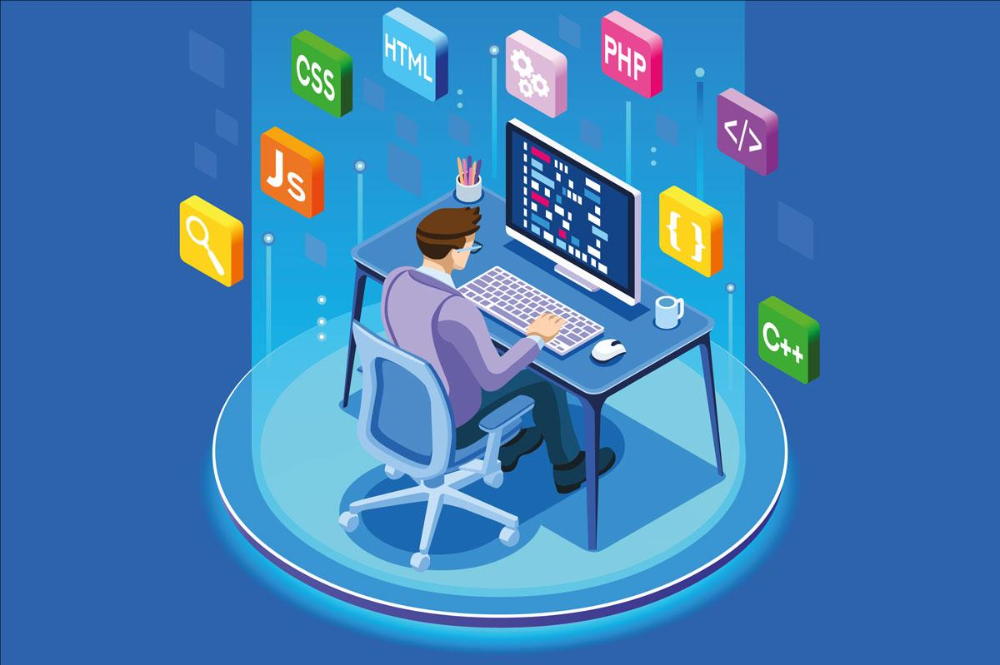
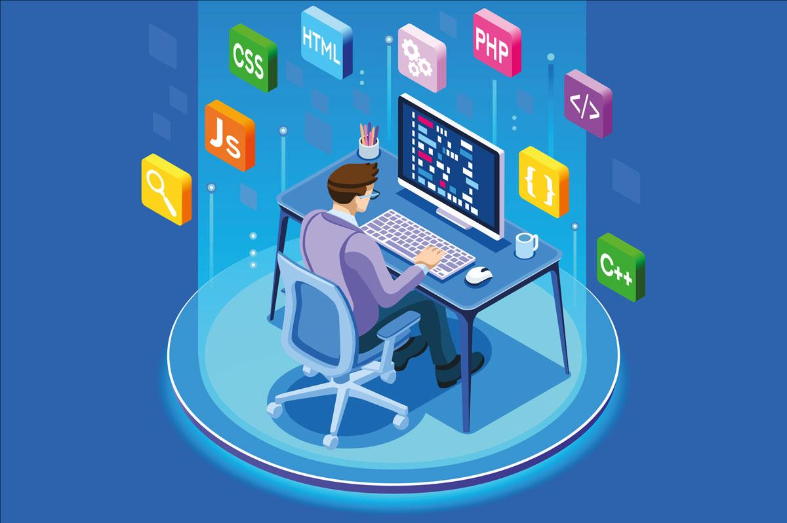

Hakkımda
Merhaba, ben Darıca Fen Lisesi mezunu ve Alanya Üniversitesi İngilizce Bilgisayar Mühendisliği 3. sınıf öğrencisiyim. Yazılım geliştirme alanına duyduğum ilgi sayesinde hem teorik hem de pratik becerilerimi sürekli olarak geliştirmeye odaklanmış durumdayım.
2025 yaz döneminde Onaymatik firmasında staj yaparak sektörel deneyim kazanmakta, aynı zamanda yazılım geliştirme süreçlerini profesyonel ortamda gözlemleme ve katkı sunma imkânı bulmaktayım. Java, Python ve JavaScript gibi programlama dillerine hâkimiyetimin yanı sıra, web geliştirme alanında HTML ve CSS gibi teknolojiler üzerine de aktif olarak çalışmakta ve kendimi bu alanda geliştirmekteyim.
Akademik bilgi birikimimi gerçek dünya projeleriyle pekiştirmek, ekip çalışmasına yatkınlık kazanmak ve yazılım mühendisliği alanında derinleşmek amacıyla disiplinli bir öğrenme süreci yürütüyorum. Gelecekte tam donanımlı bir yazılım geliştirici olarak teknolojinin insan yaşamına katkıda bulunduğu projelerde yer almayı hedefliyorum.
İleri düzeyde İngilizce, orta düzeyde ise Almanca bilmekteyim. Bu sayede hem akademik kaynaklara erişimim genişliyor hem de uluslararası çalışma ortamlarında etkin iletişim kurabiliyorum.
Eğitim
Darıca Fen Lisesi
2017 - 2021
Alanya Üniversitesi
İngilizce Bilgisayar Mühendisliği (2022 - 2027 Beklenen Mezuniyet)
Sertifikalar
- Udemy: Modern JavaScript (2023)
- Udemy: React ile Frontend Geliştirme (2023)
- Udemy: Java ile OOP (2024)
- Udemy: PHP ile Backend (2024)
- Udemy: HTML/CSS Masterclass (2022)
- Udemy: Python for Beginners (2023)
- Udemy: SQL Veritabanı Yönetimi (2024)